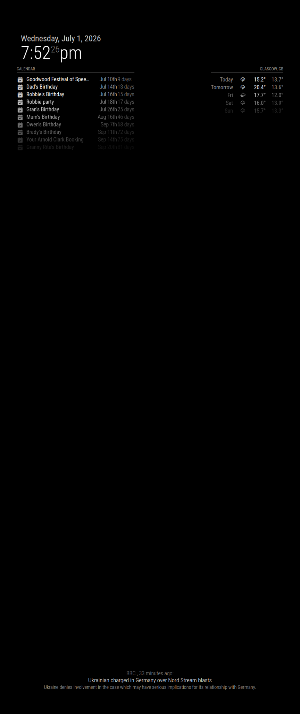

Five frame directions built around a 40×70cm two-way mirror (the internal opening). Your 27×61cm portrait panel sits centred behind the glass, with dark-mirror padding around it — ~6.5cm at the sides, ~4.5cm top and bottom. The moulding then wraps the glass; outer size varies by style.

Try next: "more padding around the monitor" · "make 1b's black warmer / more textured" · "show 1e in darker walnut" · "put them on a real wall photo"